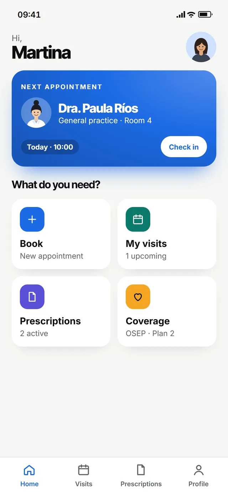
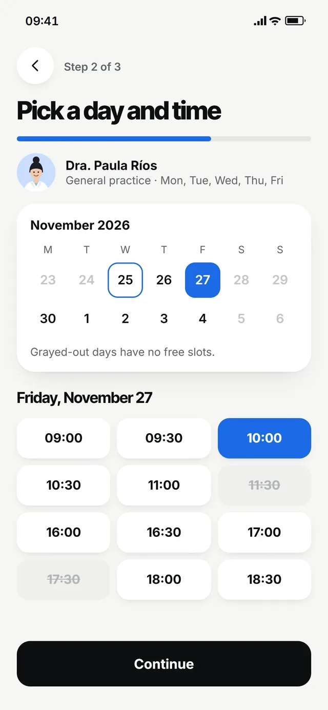
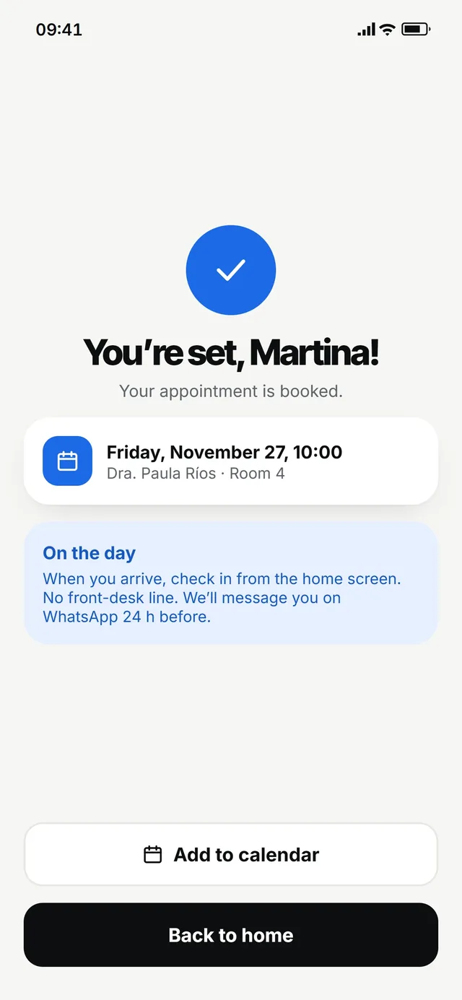
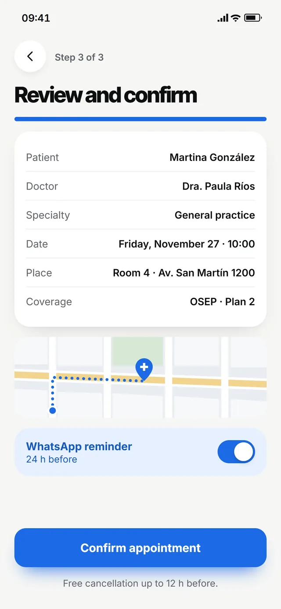

Concept project Healthcare, mobile app
Turno
A medical appointment in three taps, designed for anyone, at 25 or at 75.





Project overview
- Industry
- Healthcare
- Product
- Mobile app for patients
- My role
- Research, UX, UI and prototype
- Timeline
- 4 weeks
- Tools
- Figma, FigJam, JavaScript
- Status
- Concept, with a working prototype. Not launched
Self-initiated, with no client. Research is secondary (benchmark, proto-personas and journey map) and figures are design targets, not measured results. The prototype was validated with a heuristic evaluation; user testing is planned. The prototype follows the language of this site.
In one minute
Problem
Booking means calling during office hours, waiting on hold and writing it down by hand. People forget, and the practice is left with gaps.
Approach
One decision per screen, progress always visible and the question “who is it for?” asked before starting. Accessibility set the rules, not the finishing touches.
Outcome
A working prototype where you can book, reschedule, cancel and check in. The review found six issues; five are fixed, one is open.
01Context
Booking an appointment shouldn't feel like paperwork.
Today, booking a medical appointment means calling during office hours, waiting on hold and writing the date and time down by hand. Many people forget their appointment and the practice is left with gaps nobody uses.
- Book outside office hours
- See every free slot at a glance
- Never forget an appointment
- Fewer calls at the front desk
- Fewer no-shows
- Quickly reassign cancelled slots
- Users of all ages, including older adults
- Several health insurance plans
- Booking for yourself or a family member
02Research
Understanding how appointments are booked today.
I started with the channels people already use, to see what they do well and where they get stuck.
Channels compared
Phone, WhatsApp, web portal, insurer app and the proposal.
Proto-personas
A time-poor patient and an older adult who manages the family's appointments.
Journey stages
From the moment the need appears to leaving the visit.
Channel benchmark
| Feature | Phone | Web portal | Insurer app | Turno | |
|---|---|---|---|---|---|
| Book after hours | Delayed reply | ||||
| See free slots | Day by day | ||||
| Automatic reminder | Manual | ||||
| Reschedule in one step | Cancel and rebook | ||||
| Filter by coverage | By asking | By asking | |||
| Family appointments | Plan members only | ||||
| Easy for older adults | Varies |
Swipe the table to see every column →
Takeaway: the phone is still the simplest option for older adults, but it forces you to call during office hours. Apps solve booking, but with many screens, small type and no thought for people booking on someone else's behalf.
Proto-personas
Martina, 32
Accountant · works 9 to 6"To book an appointment I have to call exactly when I'm at work."
Goals
- Book in a spare moment, from her phone
- Pick an early slot
Frustrations
- Being kept on hold
- Forgetting and still being charged
Roberto, 68
Retired · manages his wife's appointments"Apps have tiny text and I'm never sure the appointment went through."
Goals
- Book for himself and his wife
- A clear confirmation in plain words
Frustrations
- Small buttons and jargon
- Not knowing which step he's on
Current journey map · Martina
Feels unwell and decides to see a GP.
Looks for doctors who accept her insurance.
Calls on her lunch break and waits on hold.
Writes it down on paper or in a note-to-self chat.
Arrives, checks in at the desk and waits.
Swipe to see all five stages →
Key insights
The issue is timing, not booking
Booking itself is simple; the hard part is doing it when the person actually has time.
Choosing requires seeing options
On the phone you get one slot at a time. Seeing the whole week changes the decision.
Confirmation builds trust
Without a clear "you're booked" message, older users call again to double-check.
Many book for others
Children, parents or partners manage other people's appointments: family profiles aren't an extra.
03Definition
One problem, well framed.
How might we…?How might we help anyone book a medical appointment in under a minute, without calling and without forgetting to show up?
Design principles
One screen, one decision
Each step asks for one thing: who, when, confirm.
Always know where I am
A progress bar and "Step 2 of 3" on every screen of the flow.
Readable for everyone
16 px minimum text, AA contrast and 48 px touch targets.
MVP MoSCoW prioritization
- 3-step booking
- Free slots
- Reminder
- Cancel and reschedule
- Coverage filter
- Family profiles
- Check-in
- Digital prescriptions
- Test results
- Video visits
- In-app payments
04Architecture
Fewer screens, shorter paths.
Four sections in the bottom bar and booking as the main action, one tap away from anywhere.
Sitemap
- Turno
- Home next visit · shortcuts
- Book
- 1 · Specialty and doctor
- 2 · Day and time
- 3 · Confirmation
- My appointments upcoming · history
- Prescriptions & tests
- Profile coverage · family · large text
Main flow: booking an appointment
05Wireframes
Structure before style.
Low-fidelity wireframes to validate hierarchy and flow without being distracted by color. The numbers mark the decisions on each screen.
- The next appointment sits on top: it's what people check the most.
- Four large shortcuts instead of a menu.
- Bottom bar with four sections, no hamburger menu.
- One search box for specialty or name.
- Common specialties as chips.
- Each doctor shows their next free slot.
- Visible progress: step 2 of 3.
- Two-week calendar, no picker to open.
- Taken slots dimmed, not hidden.
- A full summary before confirming.
- Reminder switched on by default.
- A single primary button with the cancellation policy below.
06Decisions
From wireframe to interface.
Walking the flow through the proto-personas and usability heuristics, I changed three things.
Native date picker
It opened a date wheel and only then showed whether there were slots. Many days turned out empty.
Two-week calendar in view
Days with no slots are dimmed from the start, avoiding the back-and-forth of "nothing on this day".
Confirmation via toast
A two-second notice said "Booked". Easy to miss, especially for Roberto.
Success screen with the summary
A full screen with the appointment, the address and "Add to calendar". There's no doubt it went through.
Family hidden in the profile
To book for someone else you had to go to Profile, switch user and come back.
"Who is it for?" at the start
One question at the start of the flow, skipped when the account has no family members.
07Design system
Calm, clear and accessible.
A trustworthy blue for actions, warm neutrals to lower anxiety and supporting colors only for categories.
Color
#1D6AE5White 4.95:1 · AA#1558C0Text 6.09:1 · AA#0B7A6BWhite 5.24:1 · AA#F5A524With ink 9.46:1#0D0E10#F6F6F4Typography
Components
Accessibility
- AA contrast on every text and button
- Touch targets of at least 48 × 48 px
- Supports the system's large text setting
- Information never relies on color alone: taken slots are also struck through
- Clear labels for screen readers
- Plain language, no medical or admin jargon
08Final UI
Three taps and done.
The full journey in high fidelity: from home to confirmation.
Home Next appointment and check-in, always in view. 
Step 1, who with Next slot and coverage without opening the detail. Step 2, day and time Days without slots and taken times, dimmed. Step 3, confirmation The whole appointment, and how to get there. Booked A confirmation you can’t miss.
09Validation
Heuristic evaluation of the prototype.
Before taking it to users, I evaluated the interactive prototype against Nielsen's 10 heuristics and walked through the main tasks step by step: booking, rescheduling, cancelling, booking for a family member and checking in. Each issue has a severity rating, and I fixed the most serious ones in the prototype.
Findings
| # | Issue and fix | Heuristic | Sev. | Status |
|---|---|---|---|---|
| 1 | You could book two appointments for the same person at the same time with different doctors.Times you already have booked are marked "Otro turno" and can't be picked. | H5 · Error prevention | 3 | Fixed |
| 2 | When rescheduling, the current time wasn't shown: you had to remember it."Your current appointment" now appears on top and the current slot is marked in the grid. | H6 · Recognition rather than recall | 3 | Fixed |
| 3 | Check-in was available at any time on the day, even hours before or after.It opens 60 min before and closes 30 min after; otherwise it shows when it opens. | H5 · Error prevention | 2 | Fixed |
| 4 | The note about grey days disappeared because the app pre-selected the first free day.The note now always sits below the calendar. | H10 · Help and documentation | 2 | Fixed |
| 5 | "Larger text" enlarged the content but not the bottom bar.It now enlarges the bottom bar too. | H4 · Consistency and standards | 1 | Fixed |
| 6 | Cancelling can't be undone (though it asks for confirmation first).Pending: add "Undo" while the slot is still free. | H3 · User control and freedom | 1 | Pending |
Swipe the table to see every column →
Severity on Nielsen's scale: 1 cosmetic, 2 minor, 3 major, 4 catastrophic. I found no severity-4 issues.
Before and after
You could book two appointments for the same person at the same time with different doctors.
Times you already have booked are marked "Otro turno" and can't be picked.
When rescheduling, the current time wasn't shown: you had to remember it.
"Your current appointment" now appears on top and the current slot is marked in the grid.
Next step: user testing
An expert review finds known usability issues, but it doesn't measure how real people behave. The next step is a moderated test with the fixed prototype, using these targets and tasks:
User test tasks
| # | Task | Success if… |
|---|---|---|
| 1 | Book a GP appointment for Thursday morning. | Reaches the success screen without going back more than once. |
| 2 | Move that appointment to Friday. | Finds "Reschedule" in under 20 s. |
| 3 | Book an appointment for your mother. | Picks the right family member before step 1. |
| 4 | You've arrived: let them know you're here. | Checks in from the home screen. |
Participants: 5 people, 3 aged 25–45 and 2 over 65, who booked at least one medical appointment in the past year.
10Learnings
What I'm taking away.
- Designing for the most demanding user (Roberto) improved the experience for everyone.
- Confirmation is part of the product, not a finishing touch.
- Showing what's unavailable saves more steps than hiding it.
- Run the test with real older adults and iterate.
- Waiting list: alert when a slot frees up.
- Web panel so the front desk can see check-ins and gaps.